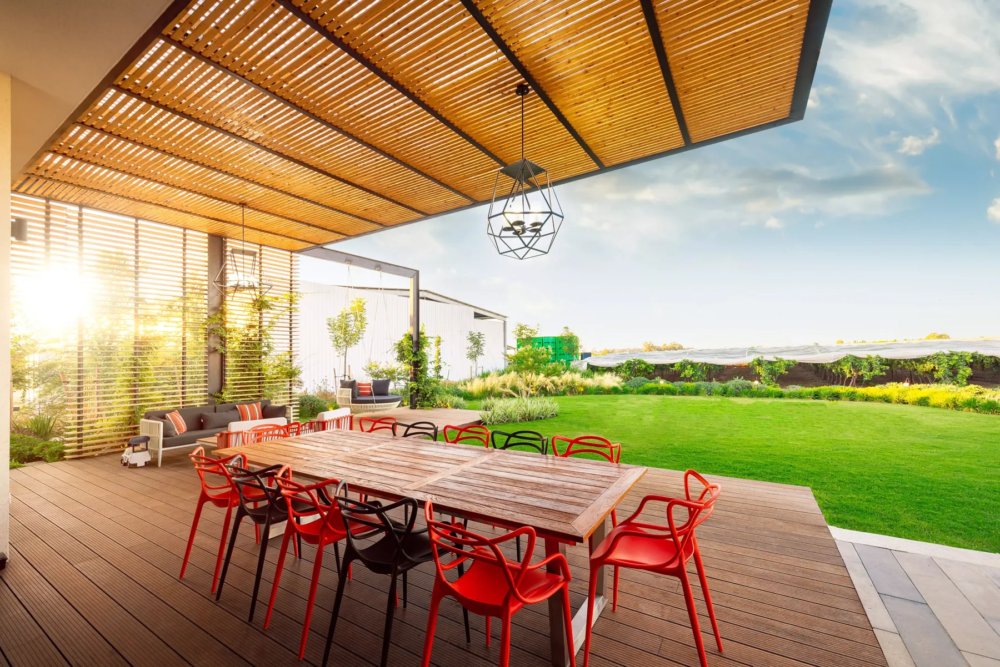
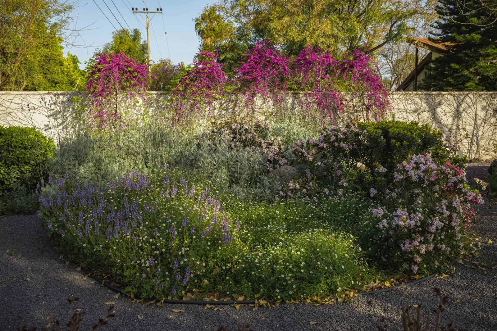

מהתוכנית ועד הביצוע, באותן ידיים
מרק גנס הקים את המשרד ב-2011 מתוך אמונה שגינה טובה נולדת כשמי שמתכנן אותה גם עומד בשטח בזמן שהיא נבנית. גנס היא חברה קבלנית רשומה, ולכן אנחנו מלווים כל פרויקט מהסקיצה הראשונה ועד מסירת המפתח.
עבדנו על חצרות בתים פרטיים, גינות גג, מתחמי מגורים ושטחים ציבוריים ביישובים. בכל אחד מהם התחלנו מאותו מקום: הבנה של אורח החיים של מי שישתמש במרחב, ושל האקלים, הקרקע והאור במגרש.

יופי שמחזיק מעמד
אנחנו מתכננים לטווח ארוך: בוחרים צמחים שמתאימים לאזור ולעונות, ומשלבים מערכות השקיה חסכוניות. החומרים צריכים להיראות טוב גם בעוד עשר שנים.
התהליך אישי. אתם מכירים את מי שמתכנן, מקבלים תשובות ישירות, ורואים את הגינה מתקדמת שלב אחרי שלב.
בואו נדבר על הפרויקט שלכם
במה אנחנו יכולים לעזור
אדריכלות נוף
תוכנית נוף מלאה למגרש פרטי או ציבורי, כולל צמחייה, חומרים, השקיה ותאורה.
ייעוץ נוף
ליווי ממוקד לגינה קיימת או לתוכנית של גורם אחר, עם המלצות מעשיות.
הקמת גינות פרטיות
ביצוע מלא כקבלן רשום, מעבודות העפר ועד השתילה האחרונה.
פארקים ומרחבים ציבוריים
גנים קהילתיים, גני הנצחה ושטחים פתוחים, בתיאום מול הרשויות.